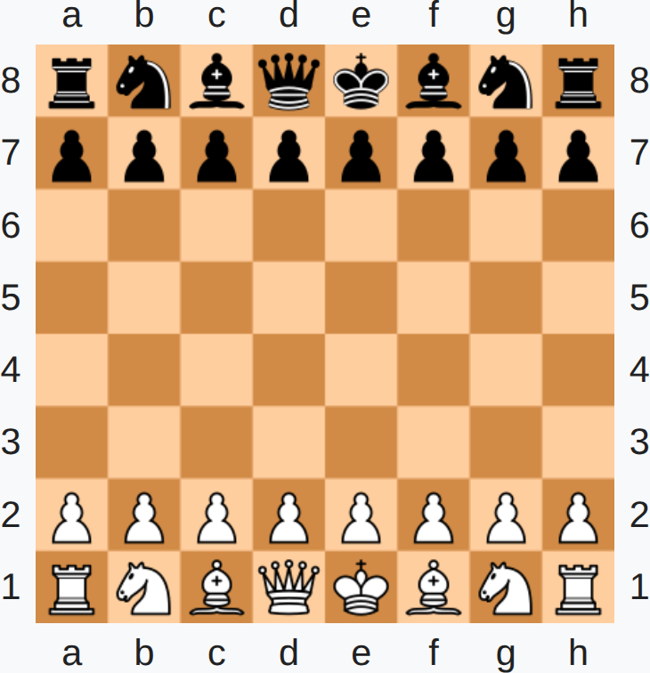

Rulebook¶
Conquer Chess intends to follow all the rules of regular chess. Most deviations from these rules are expensions to take into account that Conquer Chess is a real-time version of chess.
Below are the laws of chess with added comments when rules are different
under Conquer Chess.
Rules that only apply to Conquer Chess have CC in the number of the rule.
In the case that the documentation differs from this rulebook, one should assume that the rulebook is correct.
BASIC RULES OF PLAY¶
Article 1: The Nature and Objectives of the Game of Chess¶
- [
1.1] The game of chess is played between two opponents who move their pieces on a square board called a 'chessboard'.
In Conquer Chess this rule may be expanded to included multiple arenas of any shape added in the future.
TODO: Consider allowing multiple chessboards per match.
[1.1.CC.0]The time unit used in the game is a chess move.
For example, one can say: 'It takes one chess move to move a piece'.
How much seconds a chess move takes is set up in the game options. From this, one can say: 'A chess move takes 8 seconds'.
[1.2]The player with the light-coloured pieces (White) makes the first move, then the players move alternately, with the player with the dark-coloured pieces (Black) making the next move.
In Conquer Chess, one can decide how this works:
| When to make a move rule | Descriptiom |
|---|---|
classic |
Same as regular chess |
rts |
Both players always can make a move |
white_first |
Black can start making moves after one chess move |
TODO: Allow a user to seta 'when to make a move' rule.
-
[1.2.CC.1]The pieces of one color are from a race. -
[1.2.CC.2]It is allowed that different colors play with a same race. When this is the case, the match is called a 'mirror match'. -
[1.2.CC.3]Races are: Classic, Kingdom, Rooxx and Spawn -
[1.2.CC.4]All pieces of the a race have an equal amount of maximum health, where the maximum health level is defined to be 1.0 for the Classic race.
The maximum healths per race are as follows:
| Race | Maximum health |
|---|---|
| Classic | 1.0 |
| Rooxx | 0.5 |
| Kingdom | 0.75 |
| Spawn | 0.5 |
Need balance patches
These maximum health values are untested and balance patches are to be expected.
[1.2.CC.5]All pieces of the Rooxx race have a shield, other races do not have a shield
The maximum shield per race are as follows:
| Race | Maximum shield |
|---|---|
| Classic | None |
| Rooxx | 0.5 |
| Kingdom | None |
| Spawn | None |
Need balance patches
These maximum shield values are untested and balance patches are to be expected.
[1.2.CC.6]A piece of the Spawn race can regenerate its health. This means that when it has taken damage and given enough time, its health can gradually reach its maximum value again.
The regeneration rate per race are as follows:
| Race | Healhh regeneration rate |
|---|---|
| Classic | None |
| Rooxx | None |
| Kingdom | None |
| Spawn | 0.25 per time unit |
Need balance patches
These regeneration rates are untested and balance patches are to be expected.
[1.2.CC.7]A piece of the Rooxx race can regenerate its shield. This means that when its shield has taken damage and given enough time, its shield can gradually reach its maximum value again.
The shieled regeneration rate per race are as follows:
| Race | Regeneration rate |
|---|---|
| Classic | None |
| Rooxx | 0.25 per time unit |
| Kingdom | None |
| Spawn | None |
Need balance patches
These shield regeneration rates are untested and balance patches are to be expected.
[1.2.CC.8]All pieces of a race take an equal amount of time to move to a new square, where the speed is defined to be 1.0 chess move for the Classic race to do a move.
The movement speed per race are as follows:
| Race | Movement speed |
|---|---|
| Classic | 1.0 |
| Rooxx | 0.9 |
| Kingdom | 1.0 |
| Spawn | 1.1 |
Need balance patches
These movement speed values are untested and balance patches are to be expected.
[1.2.CC.9]All pieces of a race do an equal amount of damage to a piece-to-be-captured, where this attack speed is defined to be 1.0 health units per chess move for the Classic race.
The damage rates per race are as follows:
| Race | Attack speed |
|---|---|
| Classic | 1.0 |
| Kingdom | 1.0 |
| Rooxx | 1.1 |
| Spawn | 0.9 |
Need balance patches
These movement speed values are untested and balance patches are to be expected.
[1.2.CC.10]A piece that is protected by another piece of its color may receive a benefit, depending on the race of that piece.
These benefits are as follows:
| Race | Effect of being protected |
|---|---|
| Classic | None |
| Rooxx | Increase movement speed by 20% |
| Kingdom | Heal at a rate of 0.25 health per time unit |
| Spawn | Increase attack rate by 20% |
Need balance patches
These movement speed values are untested and balance patches are to be expected.
- [
1.3] A player is said to 'have the move' when his/her opponent's move has been 'made'.
In Conquer Chess, however, this rule is void: players can do multiple moves in succession or do nothing for as long as desired.
- [
1.4] The objective of each player is to place the opponent's king 'under attack' in such a way that the opponent has no legal move.
In Conquer Chess, there is an additional second goal: reducing the health of the opponent's king to zero.
[1.4.1]. The player who achieves this goal is said to have 'checkmated' the opponent's king and to have won the game[1.4.1a]. Leaving one's own king under attack[1.4.1b], exposing one's own king to attack[1.4.1c]and also 'capturing' the opponent's king is not allowed[1.4.1d].
In Conquer Chess, a checkmate is a direct win, even when the opponent's king has full health and the attackers have low health.
In Conquer Chess, 'capturing' the opponent's king is possible (i.e. reducing that king's health to zero) and results in a win.
- [
1.4.2] The opponent whose king has been checkmated has lost the game.
In Conquer Chess, an additional way to lose the game, is to have ones king removed by reducing its health to zero.
[1.5]If the position is such that neither player can possibly checkmate the opponent's king, the game is drawn (see Article 5.2.2).
Conquer Chess follows this rule, i.e. the game is a draw if the game would be a draw in regular chess, regardless of the health of the remaining pieces. For example, a king versus king endgame, where the one king has nearly no healh and the other has full health, this is still a draw.
Article 2: The Initial Position of the Pieces on the Chessboard¶
[2.1]The chessboard is composed of an 8 x 8 grid of 64 equal squares alternately light (the 'white' squares) and dark (the 'black' squares).
The chessboard is placed between the players in such a way that the near corner square to the right of the player is white.
-
[2.2]At the beginning of the game White has 16 light-coloured pieces (the 'white' pieces); Black has 16 dark-coloured pieces (the 'black' pieces). -
[2.3]The initial position of the pieces on the chessboard is as follows:

The initial position in Conquer Chess, see also rule
[2.3.CC.1]
The initial chess board position as a FEN string
The initial chess board position as a FEN string
-
[2.3.CC.1]In Conquer Chess the board is rotated in such a way as if the White player is at the left-hand side of the screen and the Black player is at the right-hand side of the screen -
[
2.4] The eight vertical columns of squares are called 'files'. The eight horizontal rows of squares are called 'ranks'. A straight line of squares of the same colour, running from one edge of the board to an adjacent edge, is called a 'diagonal'.
Article 3: The Moves of the Pieces¶
-
[3.1]It is not permitted to move a piece to a square occupied by a piece of the same colour. -
[3.1.1]If a piece moves to a square occupied by an opponent's piece the latter is captured and removed from the chessboard as part of the same move.
In Conquer Chess, identical to regular chess, it takes the time of one chess move to capture a piece. Instead of a regular capture, however, the attacking piece starts attacking the piece it intends to capture. Such an attack reduces the health of the piece under attack. When the health is reduced to zero, the captured piece is removed and the attacker is placed on its square instantaneous.
-
[3.1.1.CC.1]If two pieces attack the same piece, the piece that started the attack first, will end up on the square of the captured piece. -
[3.1.2]A piece is said to attack an opponent's piece if the piece could make a capture on that square according to Articles 3.2 to 3.8. -
[3.1.3]A piece is considered to attack a square even if this piece is constrained from moving to that square because it would then leave or place the king of its own colour under attack. -
[3.2]The bishop may move to any square along a diagonal on which it stands. -
[3.3]The rook may move to any square along the file or the rank on which it stands. -
[3.4]The queen may move to any square along the file, the rank or a diagonal on which it stands. -
[3.5]When making these moves, the bishop, rook or queen may not move over any intervening pieces. -
[3.6]The knight may move to one of the squares nearest to that on which it stands but not on the same rank, file or diagonal. -
[3.7]The pawn: -
[3.7.1]The pawn may move forward to the square immediately in front of it on the same file, provided that this square is unoccupied, or -
[3.7.2]on its first move the pawn may move as in 3.7.1 or alternatively it may advance two squares along the same file, provided that both squares are unoccupied, or -
[3.7.3]the pawn may move to a square occupied by an opponent's piece diagonally in front of it on an adjacent file, capturing that piece. -
[3.7.3.1]A pawn occupying a square on the same rank as and on an adjacent file to an opponent's pawn which has just advanced two squares in one move from its original square may capture this opponent's pawn as though the latter had been moved only one square. -
[3.7.3.2]This capture is only legal on the move following this advance and is called an 'en passant' capture. -
[3.7.3.3]When a player, having the move, plays a pawn to the rank furthest from its starting position, he/she must exchange that pawn as part of the same move for a new queen, rook, bishop or knight of the same colour on the intended square of arrival. This is called the square of 'promotion'. -
[3.7.3.4]The player's choice is not restricted to pieces that have been captured previously. -
[3.7.3.5]This exchange of a pawn for another piece is called promotion, and the effect of the new piece is immediate. -
[3.8]There are two different ways of moving the king: -
[3.8.1]by moving to an adjoining square -
[3.8.2]by 'castling'. This is a move of the king and either rook of the same colour along the player's first rank, counting as a single move of the king and executed as follows: the king is transferred from its original square two squares towards the rook on its original square, then that rook is transferred to the square the king has just crossed. -
[3.8.2.1]The right to castle has been lost: -
[3.8.2.1.1]1) If the king has already moved, or -
[3.8.2.1.2]2) With a rook that has already moved. -
[3.8.2.2]Castling is prevented temporarily: -
[3.8.2.2.3]3) If the square on which the king stands, or the square which it must cross, or the square which it is to occupy, is attacked by one or more of the opponent's pieces, or -
[3.8.2.2.4]4) If there is any piece between the king and the rook with which castling is to be effected. -
[3.9]The king in check: -
[3.9.1]The king is said to be 'in check' if it is attacked by one or more of the opponent's pieces, even if such pieces are constrained from moving to the square occupied by the king because they would then leave or place their own king in check. -
[3.9.2]No piece can be moved that will either expose the king of the same colour to check or leave that king in check. -
[3.10]Legal and illegal moves; illegal positions: -
[3.10.1]A move is legal when all the relevant requirements of Articles[3.1 - 3.9]have been fulfilled. -
[3.10.2]A move is illegal when it fails to meet the relevant requirements of Articles[3.1 - 3.9]. -
[3.10.3]A position is illegal when it cannot have been reached by any series of legal moves.
Article 4: The Act of Moving the Pieces¶
[4.1]Each move must be played with one hand only.
Does not apply to Conquer Chess, as within the game, a cursor is used to control units.
[4.2]Adjusting the pieces or other physical contact with a piece:
Does not apply to Conquer Chess, as within the game, pieces are placed perfectly in the middle of a square.
[4.2.1]Only the player having the move may adjust one or more pieces on their squares, provided that he/she first expresses his/her intention (for example by saying "j'adoube" or "I adjust").
Does not apply to Conquer Chess, as within the game, pieces are placed perfectly in the middle of a square.
[4.2.2]Any other physical contact with a piece, except for clearly accidental contact, shall be considered to be intent.
In Conquer Chess, selecting a piece is considered physical contact with a piece. For new players, this can be turned off.
-
[4.3]Except as provided in Article 4.2.1, if the player having the move touches on the chessboard, with the intention of moving or capturing: -
[4.3.1]one or more of his/her own pieces, he/she must move the first piece touched that can be moved. -
[4.3.2]one or more of his/her opponent's pieces, he/she must capture the first piece touched that can be captured. -
[4.3.3]one or more pieces of each colour, he/she must capture the first touched opponent's piece with his/her first touched piece or, if this is illegal, move or capture the first piece touched that can be moved or captured. If it is unclear whether the player's own piece or his/her opponent's piece was touched first, the player's own piece shall be considered to have been touched before his/her opponent's. -
[4.4]If a player having the move:
In Conquer Chess, a player always has the move, except for black for one chess move.
-
[4.4.1]touches his/her king and a rook he/she must castle on that side if it is legal to do so -
[4.4.2]deliberately touches a rook and then his/her king he/she is not allowed to castle on that side on that move and the situation shall be governed by Article 4.3.1. -
[4.4.3]intending to castle, touches the king and then a rook, but castling with this rook is illegal, the player must make another legal move with his/her king (which may include castling with the other rook). If the king has no legal move, the player is free to make any legal move. -
[4.4.4]promotes a pawn, the choice of the piece is finalised when the piece has touched the square of promotion. -
[4.5]If none of the pieces touched in accordance with Article 4.3 or Article 4.4 can be moved or captured, the player may make any legal move. -
[4.6]The act of promotion may be performed in various ways: -
[4.6.1]the pawn does not have to be placed on the square of arrival. -
[4.6.2]removing the pawn and putting the new piece on the square of promotion may occur in any order. -
[4.6.3]If an opponent's piece stands on the square of promotion, it must be captured. -
[4.7]When, as a legal move or part of a legal move, a piece has been released on a square, it cannot be moved to another square on this move. The move is considered to have been made in the case of: -
[4.7.1]A capture, when the captured piece has been removed from the chessboard and the player, having placed his/her own piece on its new square, has released this capturing piece from his/her hand. -
[4.7.2]Castling, when the player's hand has released the rook on the square previously crossed by the king. When the player has released the king from his/her hand, the move is not yet made, but the player no longer has the right to make any move other than castling on that side, if this is legal. If castling on this side is illegal, the player must make another legal move with his/her king (which may include castling with the other rook). If the king has no legal move, the player is free to make any legal move. -
[4.7.3]Promotion, when the player's hand has released the new piece on the square of promotion and the pawn has been removed from the board. -
[4.8]A player forfeits his/her right to claim against his/her opponent's violation of Articles 4.1 - 4.7 once the player touches a piece with the intention of moving or capturing it. -
[4.9]If a player is unable to move the pieces, an assistant, who shall be acceptable to the arbiter, may be provided by the player to perform this operation.
Article 5: The Completion of the Game¶
-
[5.1.1]The game is won by the player who has checkmated his/her opponent's king. This immediately ends the game, provided that the move producing the checkmate position was in accordance with Article 3 and Articles 4.2 - 4.7. -
[5.1.2]The game is lost by the player who declares he/she resigns (this immediately ends the game), unless the position is such that the opponent cannot checkmate the player's king by any possible series of legal moves. In this case the result of the game is a draw. -
[5.2.1]The game is drawn when the player to move has no legal move and his/her king is not in check. The game is said to end in 'stalemate'. This immediately ends the game, provided that the move producing the stalemate position was in accordance with Article 3 and Articles 4.2 - 4.7. -
[5.2.2]The game is drawn when a position has arisen in which neither player can checkmate the opponent's king with any series of legal moves. The game is said to end in a 'dead position'. This immediately ends the game, provided that the move producing the position was in accordance with Article 3 and Articles 4.2 - 4.7. -
[5.2.3]The game is drawn upon agreement between the two players during the game, provided both players have made at least one move. This immediately ends the game.
COMPETITIVE RULES OF PLAY¶
Article 6: The Chessclock¶
-
[6.1]'Chessclock' means a clock with two time displays, connected to each other in such a way that only one of them can run at a time. 'Clock' in the Laws of Chess means one of the two time displays. Each time display has a 'flag'. -
[6.1.1]'Flag-fall' means the expiration of the allotted time for a player. -
[6.2]Handling the chessclock: -
[6.2.1]During the game each player, having made his/her move on the chessboard, shall pause his/her own clock and start his/her opponent's clock (that is to say, he/she shall press his/her clock). This 'completes' the move. A move is also completed if:
In Conquer Chess, White always has the move from the start, where Black always has the move after one chess move.
-
[6.2.1.1]the move ends the game (see Articles 5.1.1, 5.2.1, 5.2.2, 9.2.1, 9.6.1 and 9.6.2), or -
[6.2.1.2]the player has made his/her next move, when his/her previous move was not completed. -
[6.2.2]A player must be allowed to pause his/her clock after making his/her move, even after the opponent has made his/her next move. The time between making the move on the chessboard and pressing the clock is regarded as part of the time allotted to the player.
In Conquer Chess, this rule is void, as White always has the move from the start, where Black always has the move after one chess move.
[6.2.3]A player must press his/her clock with the same hand with which he/she made his/her move. It is forbidden for a player to keep his/her finger on the clock or to 'hover' over it.
In Conquer Chess, this rule is not needed.
-
[6.2.4]The players must handle the chessclock properly. It is forbidden to press it forcibly, to pick it up, to press the clock before moving or to knock it over. Improper clock handling shall be penalised in accordance with Article 12.9. -
[6.2.5]Only the player whose clock is running is allowed to adjust the pieces.
In Conquer Chess, White always has its clock running where Black always has its clock running after one chess move.
[6.2.6]If a player is unable to use the clock, an assistant, who must be acceptable to the arbiter, may be provided by the player to perform this operation. His/Her clock shall be adjusted by the arbiter in an equitable way. This adjustment of the clock shall not apply to the clock of a player with a disability.
In Conquer Chess, this rule is not needed.
-
[6.3]Allotted time: -
[6.3.1]When using a chessclock, each player must complete a minimum number of moves or all moves in an allotted period of time including any additional amount of time added with each move. All these must be specified in advance.
TODO: Add an option to add extra time per move
-
[6.3.2]The time saved by a player during one period is added to his/her time available for the next period, where applicable. In the time-delay mode both players receive an allotted 'main thinking time'. Each player also receives a 'fixed extra time' with every move. The countdown of the main thinking time only commences after the fixed extra time has expired. Provided the player presses his/her clock before the expiration of the fixed extra time, the main thinking time does not change, irrespective of the proportion of the fixed extra time used. -
[6.4]Immediately after a flag falls, the requirements of Article 6.3.1 must be checked. -
[6.5]Before the start of the game the arbiter shall decide where the chessclock is placed. -
[6.6]At the time determined for the start of the game White's clock is started. -
[6.7]Default time: -
[6.7.1]The regulations of an event shall specify a default time in advance. If the default time is not specified, then it is zero. Any player who arrives at the chessboard after the default time shall lose the game unless the arbiter decides otherwise. -
[6.7.2]If the regulations of an event specify that the default time is not zero and if neither player is present initially, White shall lose all the time that elapses until he/she arrives, unless the regulations of an event specify or the arbiter decides otherwise. -
[6.8]A flag is considered to have fallen when the arbiter observes the fact or when either player has made a valid claim to that effect. -
[6.9]Except where one of Articles 5.1.1, 5.1.2, 5.2.1, 5.2.2, 5.2.3 applies, if a player does not complete the prescribed number of moves in the allotted time, the game is lost by that player. However, the game is drawn if the position is such that the opponent cannot checkmate the player's king by any possible series of legal moves. -
[6.10]Chessclock setting: -
[6.10.1]Every indication given by the chessclock is considered to be conclusive in the absence of any evident defect. A chessclock with an evident defect shall be replaced by the arbiter, who shall use his/her best judgement when determining the times to be shown on the replacement chessclock. -
[6.10.2]If during a game it is found that the setting of either or both clocks is incorrect, either player or the arbiter shall stop the chessclock immediately. The arbiter shall install the correct setting and adjust the times and move-counter, if necessary. He/She shall use his/her best judgement when determining the clock settings. -
[6.11.1]If the game needs to be interrupted, the arbiter shall pause the chessclock. -
[6.11.2]A player may pause the chessclock only in order to seek the arbiter's assistance, for example when promotion has taken place and the piece required is not available. -
[6.11.3]The arbiter shall decide when the game restarts. -
[6.11.4]If a player pauses the chessclock in order to seek the arbiter's assistance, the arbiter shall determine whether the player had any valid reason for doing so. If the player has no valid reason for pausing the chessclock, the player shall be penalised in accordance with Article 12.9. -
[6.12.1]Screens, monitors, or demonstration boards showing the current position on the chessboard, the moves and the number of moves made/completed, and clocks which also show the number of moves, are allowed in the playing hall. -
[6.12.2]The player may not make a claim relying only on information shown in this manner.
Article 7: Irregularities¶
-
[7.1]If an irregularity occurs and the pieces have to be restored to a previous position, the arbiter shall use his/her best judgement to determine the times to be shown on the chessclock. This includes the right not to change the clock times. He/She shall also, if necessary, adjust the clock's move-counter. -
[7.2.1]If during a game it is found that the initial position of the pieces was incorrect, the game shall be cancelled and a new game shall be played. -
[7.2.2]If during a game it is found that the chessboard has been placed contrary to Article 2.1, the game shall continue but the position reached must be transferred to a correctly placed chessboard. -
[7.3]If a game has started with colours reversed then, if less than 10 moves have been made by both players, it shall be discontinued and a new game played with the correct colours. After 10 moves or more, the game shall continue. -
[7.4]Dispaced pieces: -
[7.4.1]If a player displaces one or more pieces, he/she shall re-establish the correct position in his/her own time. -
[7.4.2]If necessary, either the player or his/her opponent shall pause the chessclock and ask for the arbiter's assistance. -
[7.4.3]The arbiter may penalise the player who displaces the pieces. -
[7.5]Illegal moves: -
[7.5.1]An illegal move is completed once the player has pressed his/her clock. If during a game it is found that an illegal move has been completed, the position immediately before the irregularity shall be reinstated. If the position immediately before the irregularity cannot be determined, the game shall continue from the last identifiable position prior to the irregularity. Articles 4.3 and 4.7 apply to the move replacing the illegal move. The game shall then continue from this reinstated position. -
[7.5.2]If the player has moved a pawn to the furthest distant rank, pressed the clock, but not replaced the pawn with a new piece, the move is illegal. The pawn shall be replaced by a queen of the same colour as the pawn. -
[7.5.3]If the player presses the clock without making a move, it shall be considered and penalised as if an illegal move. -
[7.5.4]If a player uses two hands to make a single move (for example in case of castling, capturing or promotion) and pressed the clock, it shall be considered and penalised as if an illegal move. -
[7.5.5]After the action taken under Article 7.5.1, 7.5.2, 7.5.3 or 7.5.4 for the first completed illegal move by a player, the arbiter shall give two minutes extra time to his/her opponent; for the second completed illegal move by the same player the arbiter shall declare the game lost by this player. However, the game is drawn if the position is such that the opponent cannot checkmate the player's king by any possible series of legal moves. -
[7.6]If, during a game it is found that any piece has been displaced from its correct square, the position before the irregularity shall be reinstated. If the position immediately before the irregularity cannot be determined, the game shall continue from the last identifiable position prior to the irregularity. The game shall then continue from this reinstated position.
Article 8: The recording of the moves¶
-
[8.1]How the moves shall be recorded: -
[8.1.1]In the course of play each player is required to record his/her own moves and those of his/her opponent in the correct manner, move after move, as clearly and legibly as possible, in one of the following ways: -
[8.1.1.1]by writing in the algebraic notation (Appendix C), on the paper 'scoresheet' prescribed for the competition. -
[8.1.1.2]by entering moves on the FIDE certified 'electronic scoresheet' prescribed for the competition. -
[8.1.2]It is forbidden to record the moves in advance, unless the player is claiming a draw according to Article 9.2, or 9.3 or adjourning a game according to Guidelines I.1.1 -
[8.1.3]A player may reply to his/her opponent's move before recording it, if he/she so wishes. He/She must record his/her previous move before making another. -
[8.1.4]The scoresheet shall be used only for recording the moves, the times of the clocks, offers of a draw, matters relating to a claim and other relevant data. -
[8.1.5]Both players must record the offer of a draw on the scoresheet with a symbol (=). -
[8.1.6]If a player is unable to keep score, an assistant, who must be acceptable to the arbiter, may be provided by the player to record the moves. His/Her clock shall be adjusted by the arbiter in an equitable way. This adjustment of the clock shall not apply to a player with a disability. -
[8.2]The scoresheet shall be visible to the arbiter throughout the game. -
[8.3]The scoresheets are the property of the organiser of the competition. An electronic scoresheet with an evident defect shall be replaced by the arbiter. -
[8.4]If a player has less than five minutes left on his/her clock during an allotted period of time and does not have additional time of 30 seconds or more added with each move, then for the remainder of the period he/she is not obliged to meet the requirements of Article 8.1.1. -
[8.5]Incomplete scoresheets: -
[8.5.1]If neither player keeps score under Article 8.4, the arbiter or an assistant should try to be present and keep score. In this case, immediately after a flag has fallen the arbiter shall pause the chessclock. Then both players shall update their scoresheets, using the arbiter's or the opponent's scoresheet. -
[8.5.2]If only one player has not kept score under Article 8.4, he/she must, as soon as either flag has fallen, update his/her scoresheet completely before moving a piece on the chessboard. Provided it is that player's move, he/she may use his/her opponent's scoresheet, but must return it before making a move. -
[8.5.3]If no complete scoresheet is available, the players must reconstruct the game on a second chessboard under the control of the arbiter or an assistant. He/She shall first record the actual game position, clock times, whose clock was running and the number of moves made/completed, if this information is available, before reconstruction takes place. -
[8.6]If the scoresheets cannot be brought up to date showing that a player has overstepped the allotted time, the next move made shall be considered as the first of the following time period, unless there is evidence that more moves have been made or completed. -
[8.7]At the conclusion of the game both players shall indicate the result of the game by signing both scoresheets or approve the result on their electronic scoresheets. Even if incorrect, this result shall stand, unless the arbiter decides otherwise.
Article 9: The Drawn Game¶
-
[9.1]Draw offers and event Regulations: -
[9.1.1]The regulations of an event may specify that players cannot offer or agree to a draw, whether in less than a specified number of moves or at all, without the consent of the arbiter. -
[9.1.2]However, if the regulations of an event allow a draw agreement the following shall apply: -
[9.1.2.1]A player wishing to offer a draw shall do so after having made a move on the chessboard and before pressing his/her clock. An offer at any other time during play is still valid but Article 11.5 must be considered. No conditions can be attached to the offer. In both cases the offer cannot be withdrawn and remains valid until the opponent accepts it, rejects it orally, rejects it by touching a piece with the intention of moving or capturing it, or the game is concluded in some other way. -
[9.1.2.2]The offer of a draw shall be recorded by each player on his/her scoresheet with the symbol (=). -
[9.1.2.3]A claim of a draw under Article 9.2 or 9.3 shall be considered to be an offer of a draw. -
[9.2]The game is drawn, upon a correct claim by a player having the move, when the same position for at least the third time (not necessarily by a repetition of moves): -
[9.2.1]is about to appear, if he/she first indicates his/her move, which cannot be changed, by writing it on the paper scoresheet or entering it on the electronic scoresheet and declares to the arbiter his/her intention to make this move, or -
[9.2.2]has just appeared, and the player claiming the draw has the move. -
[9.2.3]Positions are considered the same if and only if the same player has the move, pieces of the same kind and colour occupy the same squares and the possible moves of all the pieces of both players are the same. Thus positions are not the same if: -
[9.2.3.1]at the start of the sequence a pawn could have been captured en passant. -
[9.2.3.2]a king had castling rights with a rook that has not been moved, but forfeited these after moving. The castling rights are lost only after the king or rook is moved. -
[9.3]The game is drawn, upon a correct claim by a player having the move, if: -
[9.3.1]he/she indicates his/her move, which cannot be changed, by writing it on the paper scoresheet or entering it on the electronic scoresheet and declares to the arbiter his/her intention to make this move which will result in the last 50 moves by each player having been made without the movement of any pawn and without any capture, or -
[9.3.2]the last 50 moves by each player have been completed without the movement of any pawn and without any capture. -
[9.4]If the player touches a piece as in Article 4.3, he/she loses the right to claim a draw under Article 9.2 or 9.3 on that move. -
[9.5]Draw claims: -
[9.5.1]If a player claims a draw under Article 9.2 or 9.3, he/she or the arbiter shall pause the chessclock. He/She is not allowed to withdraw his/her claim. -
[9.5.2]If the claim is found to be correct, the game is immediately drawn. -
[9.5.3]If the claim is found to be incorrect, the arbiter shall add two minutes to the opponent's remaining thinking time. Then the game shall continue. If the claim was based on an intended move, this move must be made in accordance with Articles 3 and 4. -
[9.6]If one or both of the following occur(s) then the game is drawn: -
[9.6.1]the same position has appeared, as in 9.2.2 at least five times. -
[9.6.2]any series of at least 75 moves have been made by each player without the movement of any pawn and without any capture. If the last move resulted in checkmate, that shall take precedence.
Article 10: Points¶
-
[10.1]Unless the regulations of an event specify otherwise, a player who wins his/her game, or wins by forfeit, scores one point (1), a player who loses his/her game, or forfeits, scores no points (0), and a player who draws his/her game scores a half point (1/2). -
[10.2]The total score of any game can never exceed the maximum score normally given for that game. Scores given to an individual player must be those normally associated with the game, for example a score of3/4-1/4is not allowed.
Article 11: The Conduct of the Players¶
-
[11.1]The players shall take no action that will bring the game of chess into disrepute. -
[11.2]Playing venue and playing area: -
[11.2.1]The 'playing venue' is defined as the 'playing area', rest rooms, toilets, refreshment area, area set aside for smoking and other places as designated by the arbiter. -
[11.2.2]The playing area is defined as the place where the games of a competition are played. -
[11.2.3]Only with the permission of the arbiter can: -
[11.2.3.1]a player leave the playing venue, -
[11.2.3.2]the player having the move be allowed to leave the playing area. -
[11.2.3.3]a person who is neither a player nor arbiter be allowed access to the playing area. -
[11.2.4]The regulations of an event may specify that the opponent of the player having a move must report to the arbiter when he/she wishes to leave the playing area. -
[11.3]Notes and electronic devices: -
[11.3.1]During play the players are forbidden to use any notes, sources of information or advice, or analyse any game on another chessboard. -
[11.3.2]During a game, a player is forbidden to have any electronic device not specifically approved by the arbiter in the playing venue. -
[11.3.2.1]However, the regulations of an event may allow such devices to be stored in a player's bag, provided the device is completely switched off. This bag must be placed as agreed with the arbiter. Both players are forbidden to use this bag without permission of the arbiter. -
[11.3.2.2]If it is evident that a player has such a device on their person in the playing venue, the player shall lose the game. The opponent shall win. The regulations of an event may specify a different, less severe, penalty. -
[11.3.3]The arbiter may require the player to allow his/her clothes, bags, other items or body to be inspected, in private. The arbiter or person authorised by the arbiter shall inspect the player, and shall be of the same gender as the player. If a player refuses to cooperate with these obligations, the arbiter shall take measures in accordance with Article 12.9. -
[11.3.4]Smoking, including e-cigarettes, is permitted only in the section of the venue designated by the arbiter. -
[11.4]Players who have finished their games shall be considered to be spectators. -
[11.5]It is forbidden to distract or annoy the opponent in any manner whatsoever. This includes unreasonable claims, unreasonable offers of a draw or the introduction of a source of noise into the playing area. -
[11.6]Infraction of any part of Articles 11.1 - 11.5 shall lead to penalties in accordance with Article 12.9. -
[11.7]Persistent refusal by a player to comply with the Laws of Chess shall be penalised by loss of the game. The arbiter shall decide the score of the opponent. -
[11.8]If both players are found guilty according to Article 11.7, the game shall be declared lost by both players. -
[11.9]A player shall have the right to request from the arbiter an explanation of particular points in the Laws of Chess. -
[11.10]Unless the regulations of an event specify otherwise, a player may appeal against any decision of the arbiter, even if the player has signed the scoresheet (see Article 8.7). -
[11.11]Both players must assist the arbiter in any situation requiring reconstruction of the game, including draw claims. -
[11.12]Checking a 'three times occurrence of the position' or a '50 moves' claim is a duty of the players, under supervision of the arbiter.
Article 12: The Role of the Arbiter (see Preface)¶
-
[12.1]The arbiter shall see that the Laws of Chess are observed. -
[12.2]The arbiter shall: -
[12.2.1]ensure fair play, -
[12.2.2]act in the best interest of the competition, -
[12.2.3]ensure that a good playing environment is maintained, -
[12.2.4]ensure that the players are not disturbed, -
[12.2.5]supervise the progress of the competition, -
[12.2.6]take special measures in the interests of disabled players and those who need medical attention, -
[12.2.7]follow the Fair-Play Rules or Guidelines -
[12.3]The arbiter shall observe the games, especially when the players are short of time, enforce decisions he/she has made, and impose penalties on players where appropriate. -
[12.4]The arbiter may appoint assistants to observe games, for example when several players are short of time. -
[12.5]The arbiter may award either or both players additional time in the event of external disturbance of the game. -
[12.6]The arbiter must not intervene in a game except in cases described by the Laws of Chess. He/She shall not indicate the number of moves completed, except in applying Article 8.5 when at least one flag has fallen. The arbiter shall refrain from informing a player that his/her opponent has completed a move or that the player has not pressed his/her clock. -
[12.7]If someone observes an irregularity, he/she may inform only the arbiter. Players in other games must not to speak about or otherwise interfere in a game. Spectators are not allowed to interfere in a game. The arbiter may expel offenders from the playing venue. -
[12.8]Unless authorised by the arbiter, it is forbidden for anybody to use a mobile phone or any kind of communication device in the playing venue or any contiguous area designated by the arbiter. -
[12.9]Options available to the arbiter concerning penalties: -
[12.9.1]warning, -
[12.9.2]increasing the remaining time of the opponent, -
[12.9.3]reducing the remaining time of the offending player, -
[12.9.4]increasing the points scored in the game by the opponent to the maximum available for that game, -
[12.9.5]reducing the points scored in the game by the offending person, -
[12.9.6]declaring the game to be lost by the offending player (the arbiter shall also decide the opponent's score), -
[12.9.7]a fine announced in advance, -
[12.9.8]exclusion from one or more rounds, -
[12.9.9]expulsion from the competition.
APPENDICES¶
Appendix A. Rapid Chess¶
-
[A.1]A 'Rapid chess' game is one where either all the moves must be completed in a fixed time of more than 10 minutes but less than 60 minutes for each player; or the time allotted plus 60 times any increment is of more than 10 minutes but less than 60 minutes for each player. -
[A.2]Players do not need to record the moves, but do not lose their rights to claims normally based on a scoresheet. The player can, at any time, ask the arbiter to provide him/her with a scoresheet, in order to write the moves. -
[A.3]The penalties mentioned in Articles 7 and 9 of the Competitive Rules of Play shall be one minute instead of two minutes. -
[A.4]The Competitive Rules of Play shall apply if: -
[A.4.1]one arbiter supervises at most three games and -
[A.4.2]each game is recorded by the arbiter or his/her assistant and, if possible, by electronic means. -
[A.4.3]The player may at any time, when it is his/her move, ask the arbiter or his/her assistant to show him/her the scoresheet. This may be requested a maximum of five times in a game. More requests shall be considered as a distraction of the opponent. -
[A.5]Otherwise the following apply: -
[A.5.1]From the initial position, once 10 moves have been completed by each player, -
[A.5.1.1]No change can be made to the clock setting, unless the schedule of the event would be adversely affected. -
[A.5.1.2]No claim can be made regarding incorrect set-up or orientation of the chessboard. In case of incorrect king placement, castling is not allowed. In case of incorrect rook placement, castling with this rook is not allowed. -
[A.5.2]If the arbiter observes an action taken under Article 7.5.1, 7.5.2, 7.5.3 or 7.5.4, he/she shall act according to Article 7.5.5, provided the opponent has not made his/her next move. If the arbiter does not intervene, the opponent is entitled to claim, provided the opponent has not made his/her next move. If the opponent does not claim and the arbiter does not intervene, the illegal move shall stand and the game shall continue. Once the opponent has made his/her next move, an illegal move cannot be corrected unless this is agreed by the players without intervention of the arbiter. -
[A.5.3]To claim a win on time, the claimant may pause the chessclock and notify the arbiter. However, the game is drawn if the position is such that the claimant cannot checkmate the player's king by any possible series of legal moves. -
[A.5.4]If the arbiter observes both kings are in check, or a pawn stands on the rank furthest from its starting position, he/she shall wait until the next move is completed. Then, if an illegal position is still on the board, he/she shall declare the game drawn. -
[A.5.5]The arbiter shall also call a flag fall, if he/she observes it. -
[A.6]The regulations of an event shall specify whether Article A.4 or Article A.5 shall apply for the entire event.
Appendix B. Blitz¶
-
[B.1]A 'blitz' game is one where all the moves must be completed in a fixed time of 10 minutes or less for each player; or the allotted time plus 60 times any increment is 10 minutes or less for each player. -
[B.2]The Competitive Rules of Play shall apply if: -
[B.2.1]one arbiter supervises one game and -
[B.2.2]each game is recorded by the arbiter or his/her assistant and, if possible, by electronic means. -
[B.2.3]The player may at any time, when it is his/her move, ask the arbiter or his/her assistant to show him/her the scoresheet. This may be requested a maximum of five times in a game. More requests shall be considered as a distraction of the opponent. -
[B.3]Otherwise, play shall be governed by the Rapid chess Laws as in Article A.2, A.3 and A.5. -
[B.4]The regulations of an event shall specify whether Article B.2 or Article B.3 shall apply for the entire event.
Appendix C. Algebraic Notation¶
FIDE recognises for its own tournaments and matches only one system of notation, the Algebraic System, and recommends the use of this uniform chess notation also for chess literature and periodicals. Scoresheets using a notation system other than algebraic may not be used as evidence in cases where normally the scoresheet of a player is used for that purpose. An arbiter who observes that a player is using a notation system other than the algebraic should warn the player of this requirement.
Description of the Algebraic System
-
[C.1]In this description, 'piece' means a piece other than a pawn. -
[C.2]Each piece is indicated by an abbreviation. In the English language it is the first letter, a capital letter, of its name. Example:K= king,Q= queen,R= rook,B= bishop,N= knight. (N is used for a knight, in order to avoid ambiguity.) -
[C.3]For the abbreviation of the name of the pieces, each player is free to use the name which is commonly used in his/her country. Examples:F= fou (French for bishop),L= loper (Dutch for bishop). In printed periodicals, the use of figurines is recommended. -
[C.4]Pawns are not indicated by their first letter, but are recognised by the absence of such a letter. Examples: the moves are writtene5,d4,a5, notpe5,Pd4,pa5. -
[C.5]The eight files (from left to right for White and from right to left for Black) are indicated by the small letters, a, b, c, d, e, f, g and h, respectively. -
[C.6]The eight ranks (from bottom to top for White and from top to bottom for Black) are numbered 1, 2, 3, 4, 5, 6, 7, 8, respectively. Consequently, in the initial position the white pieces and pawns are placed on the first and second ranks; the black pieces and pawns on the eighth and seventh ranks. -
[C.7]As a consequence of the previous rules, each of the sixty-four squares is invariably indicated by a unique combination of a letter and a number. -
[C.8]Each move of a piece is indicated by the abbreviation of the name of the piece in question and the square of arrival. There is no need for a hyphen between name and square. Examples:Be5,Nf3,Rd1.
In the case of pawns, only the square of arrival is indicated.
Examples: e5, d4, a5.
A longer form containing the square of departure is acceptable.
Examples: Bb2e5, Ng1f3, Ra1d1, e7e5, d2d4, a6a5.
-
[C.9]When a piece makes a capture, anxmay be inserted between: -
[C.9.1]the abbreviation of the name of the piece in question and -
[]C. 9.2the square of arrival. Examples:Bxe5,Nxf3,Rxd1, see also C.10. -
[C.9.3]When a pawn makes a capture, the file of departure must be indicated, then anxmay be inserted, then the square of arrival. Examples:dxe5,gxf3,axb5. In the case of an 'en passant' capture,e.p.may be appended to the notation. Example:exd6 e.p. -
[C.10]If two identical pieces can move to the same square, the piece that is moved is indicated as follows: -
[C.10.1]If both pieces are on the same rank by: -
[C.10.1.1]The abbreviation of the name of the piece, -
[C.10.1.2]The file of departure, and -
[C.10.1.2]The square of arrival. -
[C.10.2]If both pieces are on the same file by: -
[C.10.2.1]The abbreviation of the name of the piece, -
[C.10.2.2]The rank of the square of departure, and -
[C.10.2.3]The square of arrival. -
[C.10.3]If the pieces are on different ranks and files, method 1 is preferred. Examples: -
[C.10.3.1]There are two knights, on the squaresg1ande1, and one of them moves to the squaref3: eitherNgf3orNef3, as the case may be. -
[C.10.3.2]There are two knights, on the squares g5 and g1, and one of them moves to the square f3: eitherN5f3orN1f3, as the case may be. -
[C.10.3.3]There are two knights, on the squares h2 and d4, and one of them moves to the square f3: eitherNhf3orNdf3, as the case may be. -
[C.10.3.4]If a capture takes place on the square f3, the notation of the previous examples is still applicable, but anxmay be inserted: 1) eitherNgxf3orNexf3, 2) eitherN5xf3orN1xf3, 3) eitherNhxf3orNdxf3, as the case may be. -
[C.11]In the case of the promotion of a pawn, the actual pawn move is indicated, followed immediately by the abbreviation of the new piece. Examples:d8Q,exf8N,b1B,g1R. -
[C.12]The offer of a draw shall be marked as (=). -
[C.13]Abbreviations -
[C.13.1]0-0= castling with rook h1 or rook h8 (kingside castling) -
[C.13.2]0-0-0= castling with rook a1 or rook a8 (queenside castling) -
[C.13.3]x= captures -
[C.13.4]+= check -
[C.13.5]++or#= checkmate -
[C.13.6]e.p.= captures 'en passant'
Articles C.13.3 - C.13.6 are optional.
Sample game:
1.e4 e5 2. Nf3 Nf6 3. d4 exd4 4. e5 Ne4 5. Qxd4 d5 6. exd6 e.p. Nxd6 7. Bg5 Nc6 8. Qe3+ Be7 9. Nbd2 0-0 10. 0-0-0 Re8 11. Kb1 (=)
Or:
1. e4 e5 2. Nf3 Nf6 3. d4 ed4 4. e5 Ne4 5. Qd4 d5 6. ed6 Nd6 7. Bg5 Nc6 8. Qe3 Be7 9 Nbd2 0-0 10. 0-0-0 Re8 11. Kb1 (=)
Or:
1. e2e4 e7e5 2.Ng1f3 Ng8f6 3. d2d4 e5xd4 4. e4e5 Nf6e4 5. Qd1xd4 d7d5 6. e5xd6 e.p. Ne4xd6 7. Bc1g5 Nb8c6 8. Qd4d3 Bf8e7 9. Nb1d2 0-0 10. 0-0-0 Rf8e8 11. Kb1 (=)
Appendix D. Rules for Play with Blind and Visually Disabled Players¶
-
[D.1]The organiser, after consulting the arbiter, shall have the power to adapt the following rules according to local circumstances. In competitive chess between sighted and visually disabled (legally blind) players either player may demand the use of two boards, the sighted player using a normal board, the visually disabled player using one specially constructed. This board must meet the following requirements: -
[D.1.1]measure at least 20 cm by 20 cm, -
[D.1.2]have the black squares slightly raised, -
[D.1.3]have a securing aperture in each square, -
[D.1.4]The requirements for the pieces are: -
[D.1.4.1]all are provided with a peg that fits into the securing aperture of the board, -
[D.1.4.2]all are of Staunton design, the black pieces being specially marked. -
[D.2]The following regulations shall govern play: -
[D.2.1]The moves shall be announced clearly, repeated by the opponent and executed on his/her chessboard. When promoting a pawn, the player must announce which piece is chosen. To make the announcement as clear as possible, the use of the following names is suggested instead of the corresponding letters:
Unless the arbiter decides otherwise, ranks from White to Black shall be given the German numbers
Castling is announced "Lange Rochade" (German for long castling) and "Kurze Rochade" (German for short castling).
The pieces bear the names:
Koenig, Dame, Turm, Laeufer, Springer, Bauer.
-
[D.2.2]On the visually disabled player's board a piece shall be considered 'touched' when it has been taken out of the securing aperture. -
[D.2.3]A move shall be considered 'made' when: -
[D.2.3.1]in the case of a capture, the captured piece has been removed from the board of the player whose turn it is to move, -
[D.2.3.2]a piece has been placed into a different securing aperture, -
[D.2.3.3]the move has been announced. -
[D.2.4]Only then shall the opponent's clock be started. -
[D.2.5]As far as points D.2.2 and D.2.3 are concerned, the normal rules are valid for the sighted player. -
[D.2.6]Chessclock for visually disabled players: -
[D.2.6.1]A specially constructed chessclock for the visually disabled shall be admissible. It should be able to announce the time and number of moves to the visually disabled player. -
[D.2.6.2]Alternatively an analogue clock with the following features may be considered:
1) a dial fitted with reinforced hands, with every five minutes marked by one raised dot, and every 15 minutes by two raised dots, and
2) a flag which can be easily felt; care should be taken that the flag is so arranged as to allow the player to feel the minute hand during the last five minutes of the full hour.
-
[D.2.7]The visually disabled player must keep score of the game in Braille or longhand, or record the moves on a recording device. -
[D.2.8]A slip of the tongue in the announcement of a move must be corrected immediately and before the clock of the opponent is started. -
[D.2.9]If during a game, different positions should arise on the two boards, they must be corrected with the assistance of the arbiter and by consulting both players' game scores. If the two game scores correspond with each other, the player who has written the correct move but made the wrong one must adjust his/her position to correspond with the move on the game scores. When the game scores are found to differ, the moves shall be retraced to the point where the two scores agree, and the arbiter shall readjust the clocks accordingly. -
[D.2.10]The visually disabled player shall have the right to make use of an assistant who shall have any or all of the following duties: -
[D.2.10.1]making either player's move on the board of the opponent, -
[D.2.10.2]announcing the moves of both players, -
[D.2.10.3]keeping the game score of the visually disabled player and starting his/her opponent's clock. -
[D.2.10.4]informing the visually disabled player, only at his/her request, of the number of moves completed and the time used up by both players, -
[D.2.10.5]claiming the game in cases where the time limit has been exceeded and informing the arbiter when the sighted player has touched one of his/her pieces, -
[D.2.10.6]carrying out the necessary formalities in cases where the game is adjourned. -
[D.2.11]If the visually disabled player does not make use of an assistant, the sighted player may make use of one who shall carry out the duties mentioned in points D.2.10.1 and D.2.10.2. An assistant must be used in the case of a visually disabled player paired with a hearing-impaired player.
GUIDELINES¶
Introduction¶
The following Guidelines are here to assist in organizing events where they may be needed. While they are not part of the FIDE Laws of Chess, it is strongly recommended that they be used across all events where applicable.
Guidelines I. Adjourned Games¶
-
[I.1]Adjournment procedure: -
[I.1.1]If a game is not finished at the end of the time prescribed for play, the arbiter shall require the player having the move to 'seal' that move. The player must write his/her move in unambiguous notation on a paper scoresheet, put his/her scoresheet and that of his/her opponent in an envelope, seal the envelope and only then stop the chessclock. Until he/she has stopped the chessclock the player retains the right to change his/her sealed move. If, after being told by the arbiter to seal his/her move, the player makes a move on the chessboard he/she must write that same move on his/her scoresheet as his/her sealed move. -
[I.1.2]A player having the move who adjourns the game before the end of the playing session shall be considered to have sealed at the nominal time for the end of the session, and his/her remaining time shall so be recorded. -
[I.2]The following shall be indicated upon the envelope: -
[I.2.1]the names of the players, -
[I.2.2]the position immediately before the sealed move, -
[I.2.3]the time used by each player, -
[I.2.4]the name of the player who has sealed the move, -
[I.2.5]the number of the sealed move, -
[I.2.6]the offer of a draw, if the proposal is current, -
[I.2.7]the date, time and venue of resumption of play. -
[I.3]The arbiter shall check the accuracy of the information on the envelope and is responsible for its safekeeping. -
[I.4]If a player proposes a draw after his/her opponent has sealed his/her move, the offer is valid until the opponent has accepted it or rejected it as in Article 9.1. -
[I.5]Before the game is to be resumed, the position immediately before the sealed move shall be set up on the chessboard, and the times used by each player when the game was adjourned shall be indicated on the clocks. -
[I.6]If prior to the resumption the game is agreed drawn, or if one of the players notifies the arbiter that he/she resigns, the game is concluded. -
[I.7]The envelope shall be opened only when the player who must reply to the sealed move is present. -
[I.8]Except in the cases mentioned in Articles 5, 5.2.2, 6.9 and 9.6, the game is lost by a player whose recording of his/her sealed move: -
[I.8.1]is ambiguous, or -
[I.8.2]is recorded in such a way that its true significance is impossible to establish, or -
[I.8.3]is illegal. -
[I.9]If, at the agreed resumption time: -
[I.9.1]the player having to reply to the sealed move is present, the envelope is opened, the sealed move is made on the chessboard and his/her clock is started, -
[I.9.2]the player having to reply to the sealed move is not present, his/her clock shall be started; on his/her arrival, he/she may pause his/her clock and summon the arbiter; the envelope is then opened and the sealed move is made on the chessboard; his/her clock is then restarted, -
[I.9.3]the player who sealed the move is not present, his/her opponent has the right to record his/her reply on the scoresheet, seal his/her scoresheet in a fresh envelope, pause his/her clock and start the absent player's clock instead of making his/her reply in the normal manner; if so, the envelope shall be handed to the arbiter for safekeeping and opened on the absent player's arrival. -
[I.10]Any player who arrives at the chessboard after the default time shall lose the game unless the arbiter decides otherwise. However, if the sealed move resulted in the conclusion of the game, that conclusion shall still apply. -
[I.11]If the regulations of an event specify that the default time is not zero, the following shall apply: If neither player is present initially, the player who has to reply to the sealed move shall lose all the time that elapses until he/she arrives, unless the regulations of an event specify or the arbiter decides otherwise. -
[I.12]Resuming an adjourned game: -
[I.12.1]If the envelope containing the sealed move is missing, the game shall continue from the adjourned position, with the clock times recorded at the time of adjournment. If the time used by each player cannot be re-established, the arbiter shall set the clocks. The player who sealed the move shall make the move he/she states he/she sealed on the chessboard. -
[I.12.2]If it is impossible to re-establish the position, the game shall be annulled and a new game shall be played. -
[I.13]If, upon resumption of the game, either player points out before making his/her first move that the time used has been incorrectly indicated on either clock, the error must be corrected. If the error is not then established the game shall continue without correction unless the arbiter decides otherwise. -
[I.14]The duration of each resumption session shall be controlled by the arbiter's timepiece. The starting time shall be announced in advance.
Guidelines II. Chess960 Rules¶
-
[II.1]Before a Chess960 game a starting position is randomly set up, subject to certain rules. After this, the game is played in the same way as regular chess. In particular, pieces and pawns have their normal moves, and each player's objective is to checkmate the opponent's king. -
[II.2]Starting Position Requirements
The starting position for Chess960 must meet certain rules. White pawns are placed on the second rank as in regular chess. All remaining white pieces are placed randomly on the first rank, but with the following restrictions:
-
[II.2.1]the king is placed somewhere between the two rooks, and -
[II.2.2]the bishops are placed on opposite-coloured squares, and -
[II.2.3]the black pieces are placed opposite the white pieces.
The starting position can be generated before the game either by a computer program or using dice, coin, cards, etc.
-
[II.3]Chess960 castling rules -
[II.3.1]Chess960 allows each player to castle once per game, a move by potentially both the king and rook in a single move. However, a few interpretations of regular chess rules are needed for castling, because the regular rules presume initial locations of the rook and king that are often not applicable in Chess960. -
[II.3.2]How to castle. In Chess960, depending on the pre-castling position of the castling king and rook, the castling manoeuvre is performed by one of these four methods: -
[II.3.2.1]double-move castling: by making a move with the king and a move with the rook, or -
[II.3.2.2]transposition castling: by transposing the position of the king and the rook, or -
[II.3.2.3]king-move-only castling: by making only a move with the king, or -
[II.3.2.4]rook-move-only castling: by making only a move with the rook. -
[II.3.2.5]Recommendations:
When castling on a physical board with a human player, it is recommended that the king be moved outside the playing surface next to his/her final position, the rook then be moved from its starting position to its final position, and then the king be placed on his final square. After castling, the rook and king's final positions should be exactly the same positions as they would be in regular chess.
[II.3.2.6]Clarification
Thus, after c-side castling (notated as 0-0-0 and known as queen-side
castling in orthodox chess), the king is on the
c-square (c1 for white and c8 for black) and the rook is on the d-square
(d1 for white and d8 for black). After g-side castling
(notated as 0-0 and known as king-side castling in orthodox chess),
the king is on the g-square (g1 for white and g8 for black)
and the rook is on the f-square (f1 for white and f8 for black).
-
[II.3.2.7]Notes -
To avoid any misunderstanding, it may be useful to state "I am about to castle" before castling.
- In some starting positions, the king or rook (but not both) does not move during castling.
- In some starting positions, castling can take place as early as the first move.
- All the squares between the king's initial and final squares (including the final square) and all the squares between the rook's initial and final squares (including the final square) must be vacant except for the king and castling rook.
- In some starting positions, some squares can stay filled during castling that would have to be vacant in regular chess. For example, after c-side castling 0-0-0, it is possible to have a, b, and/or e still filled, and after g-side castling (0-0), it is possible to have e and/or h filled.
Guidelines III. Games without Increment including Quickplay Finishes¶
-
[III.1]A 'quickplay finish' is the phase of a game when all the remaining moves must be completed in a finite time. -
[III.2.1]The Guidelines below concerning the final period of the game including Quickplay Finishes, shall only be used at an event if their use has been announced beforehand. -
[III.2.2]These Guidelines shall apply only to standard chess and rapid chess games without increment and not to blitz games. -
[III.3.1]If both flags have fallen and it is impossible to establish which flag fell first then: -
[III.3.1.1]the game shall continue if this occurs in any period of the game except the last period. -
[III.3.1.2]the game is drawn if this occurs in the period of a game in which all remaining moves must be completed. -
[III.4]If the player having the move has less than two minutes left on his/her clock, he/she may request that an increment extra five seconds be introduced for both players. This constitutes the offer of a draw. If the offer refused, and the arbiter agrees to the request, the clocks shall then be set with the extra time; the opponent shall be awarded two extra minutes and the game shall continue. -
[III.5]If Article III.4 does not apply and the player having the move has less than two minutes left on his/her clock, he/she may claim a draw before his/her flag falls (see also Article 6.12.2). He/She shall summon the arbiter and may pause the chessclock. He/She may claim on the basis that his/her opponent cannot win by normal means, and/or that his/her opponent has been making no effort to win by normal means: -
[III.5.1]If the arbiter agrees that the opponent cannot win by normal means, or that the opponent has been making no effort to win the game by normal means, he/she shall declare the game drawn. Otherwise he/she shall postpone his/her decision or reject the claim. -
[III.5.2]If the arbiter postpones his/her decision, the opponent may be awarded two extra minutes and the game shall continue, if possible, in the presence of an arbiter. The arbiter shall declare the final result later in the game or as soon as possible after the flag of either player has fallen. He/She shall declare the game drawn if he/she agrees that the opponent of the player whose flag has fallen cannot win by normal means, or that he/she was not making sufficient attempts to win by normal means. -
[III.5.3]If the arbiter has rejected the claim, the opponent shall be awarded two extra minutes. -
[III.6]The following shall apply when the competition is not supervised by an arbiter: -
[III.6.1]A player may claim a draw when he/she has less than two minutes left on his/her clock and before his/her flag falls. This concludes the game. He/She may claim on the basis: -
[III.6.1.1]that his/her opponent cannot win by normal means, and/or -
[III.6.1.2]that his/her opponent has been making no effort to win by normal means. In III.6.1.1 the player must write down the final position and his/her opponent must verify it. In III.6.1.2 the player must write down the final position and submit an up-to-date scoresheet. The opponent shall verify both the scoresheet and the final position. -
[III.6.2]The claim shall be referred to the designated arbiter.
Castling¶
Castling is a special move. It is the only chess move in which two pieces are moved at the same time. In castling, at the same time, the king moves two squares towards one of the rooks, where the partnering rook will move over the king and end up next to it.
As per regular chess, castling is only possible when:
- the king is not in check
- the squares the king passes through are not attacked
- the king's destination square is not under attack
- the king has never moved
- the partnering rook has never moved
As Conquer Chess is a real-time strategy game, castling can fail while ongoing.
Castling can fail in the first half chess move under these conditions:
- The king's destination square becomes occupied by another piece
- The rooks's destination square becomes occupied by another piece
- The king's destination square becomes attacked
- The rook is killed
when in check, going through check, when the king has moved or when the partnering rook has moved.